*This article was created with AI (ChatGPT 5), with some additions of my own lol I went to eat here in December 2024😄
It was a day when rain clouds made the color of the sea look just a little heavy, on the way from Nago toward Motobu. I stopped by "Motobu Soba," a shop whose yellow exterior jumps right out at you.
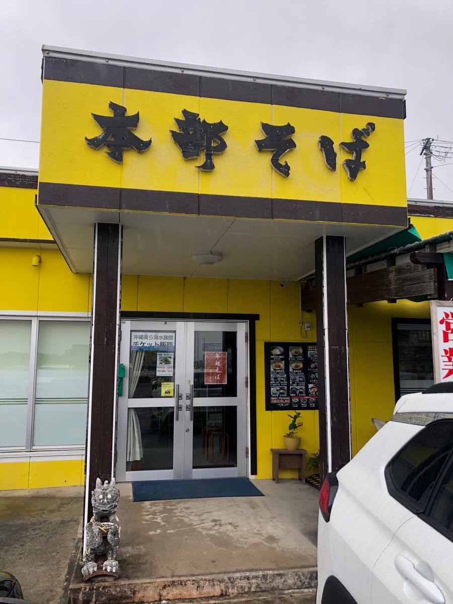
As you can see in the photo, the exterior displaying "Motobu Soba" in black 3D lettering really stands out, and the little shisa by the entrance seems to greet you with a "welcome!", which is cute🦁✨.
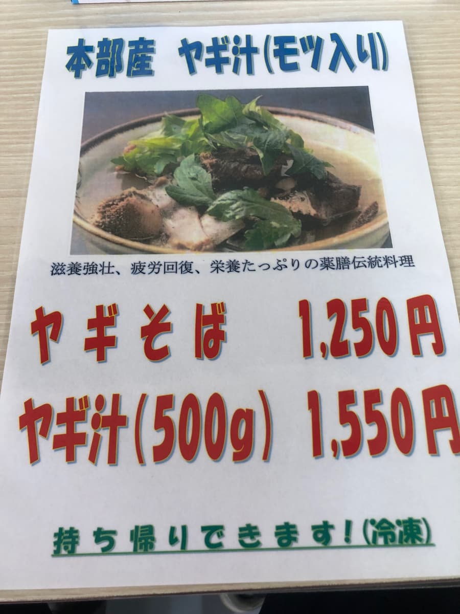
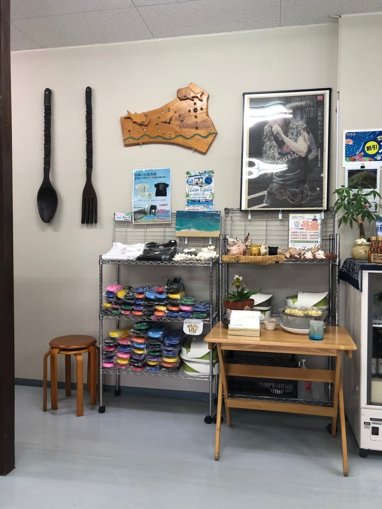
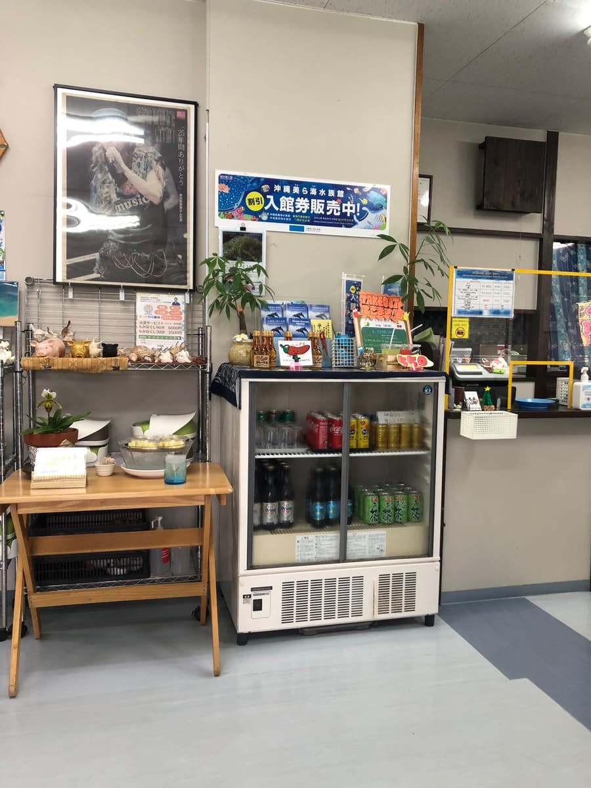
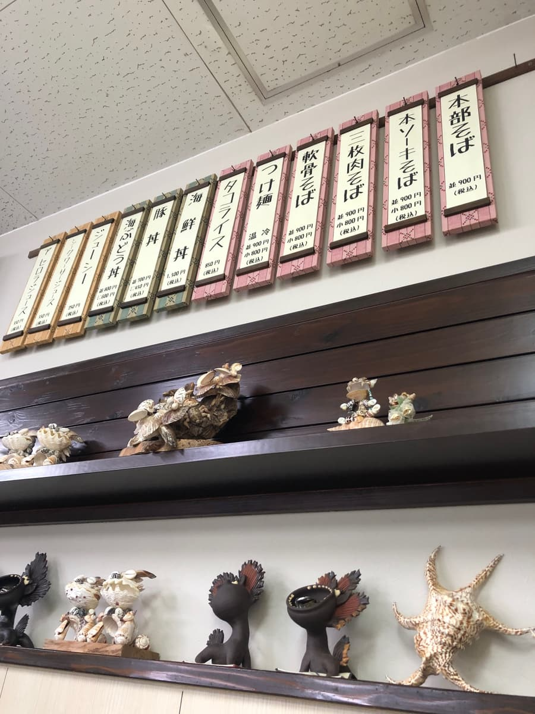
Inside the shop there are seashells, woodwork objects, and even houseplants; it has a relaxed atmosphere, as if a tourist-spot vibe and local everyday life were mixed exactly half and half. The wooden-placard menus lined up high on the wall are very Okinawan too, and just looking at them gets me excited.
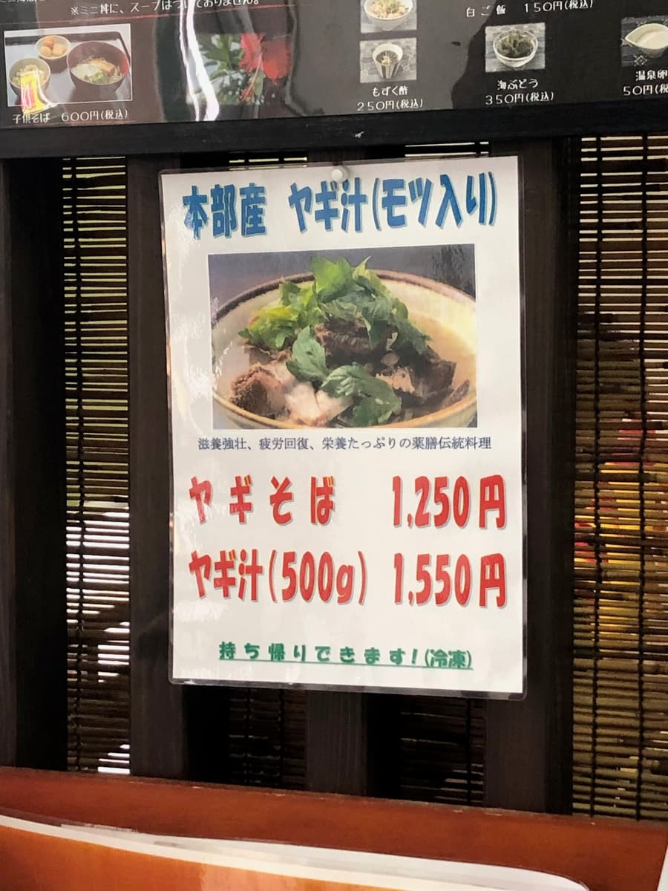
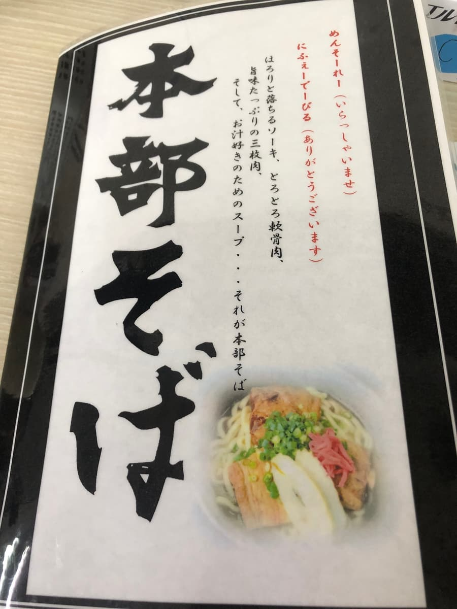
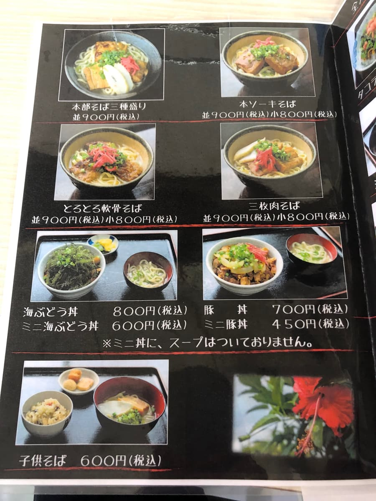
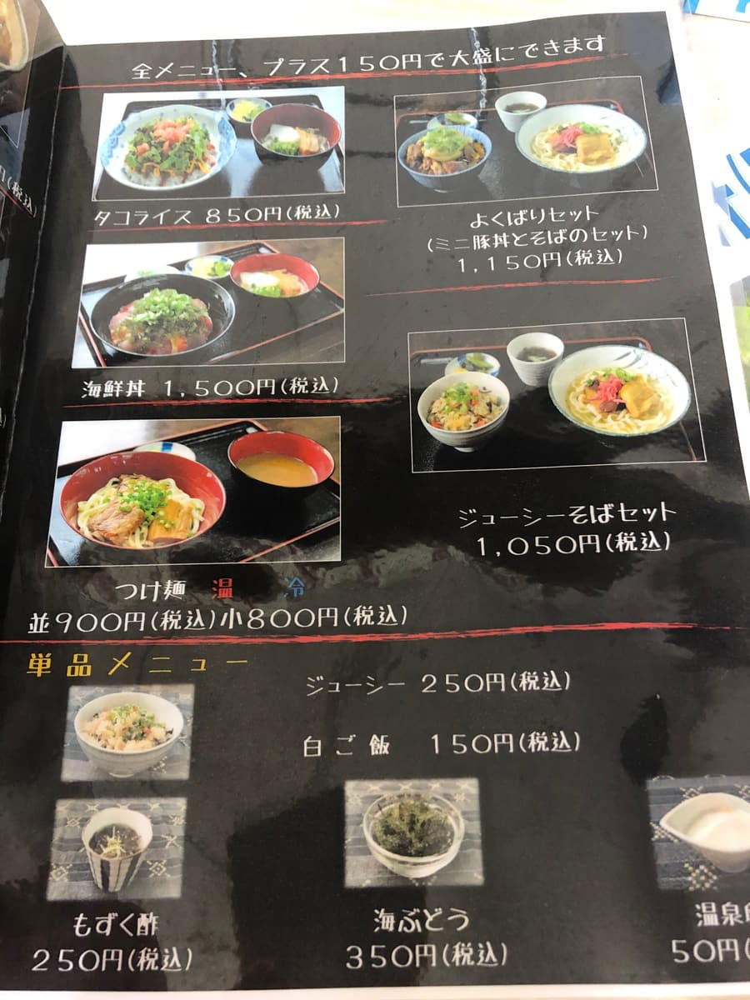
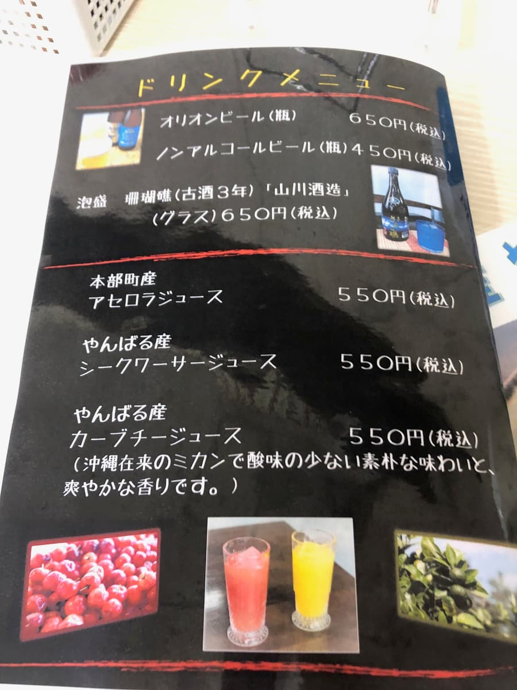
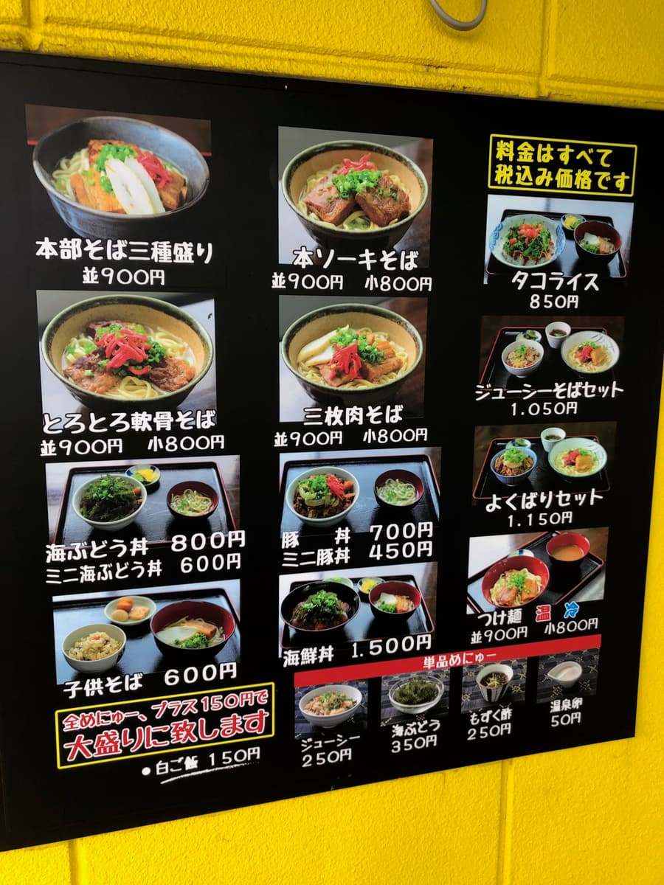
That day I had the "Motobu soba three-kind platter," listed first on the menu and seemingly their selling point, in regular size. As shown in the menu photo, it's ¥900 including tax, a really good value. Outside there's also a covered terrace, and raindrops were wetting the wooden floor, but I couldn't help imagining how pleasant a space it would be on a sunny day🌺.
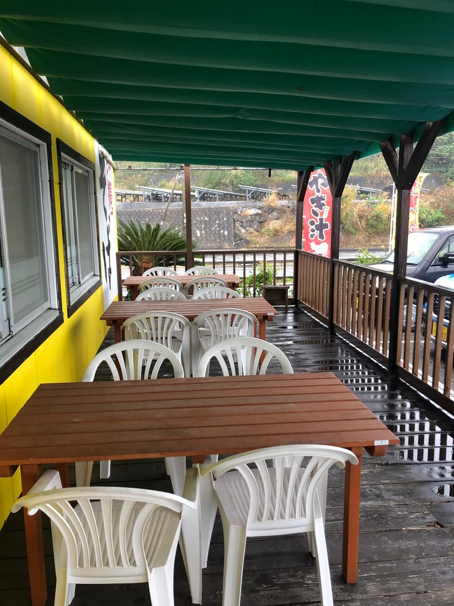
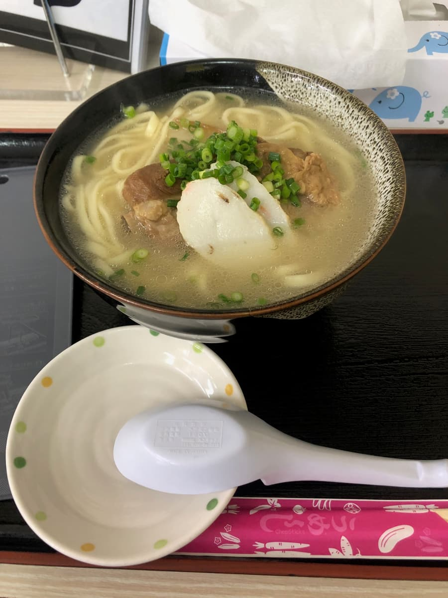
Now, the bowl arrives. Beyond the rising steam, a clear pork-bone-based broth glistens. As in the photo, green onion and fish cake are modestly placed on top, and the star meat trio is bone-in pork ribs (hon-soki), braised pork belly (sanmai-niku), and soft-bone pork ribs (nankotsu soki)🍖. First, a sip of the broth. The aroma leads with the fullness of pork bone, but the flavor is surprisingly restrained; neither the salt nor the fat is pushy, and I think "a classic, ordinary pork bone broth" describes it perfectly.
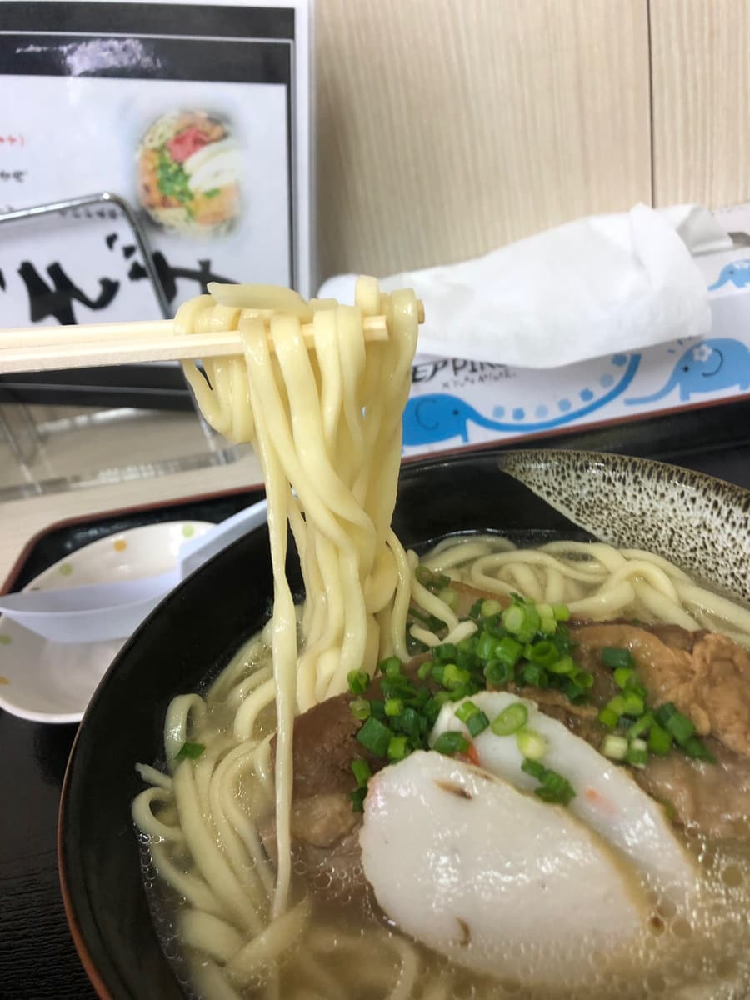
The noodles are medium-thin and straight. As in the noodle lift shot, they have a hint of squared edges, but they're cooked on the soft side. Rather than a springy bounce when you bite, they're the type that hugs the broth and slips down smoothly. Personally I'd like them with just half a step more firmness.
The seasoning is light overall. On the other hand, the bone-in pork ribs and braised pork belly retain a noticeable sinewiness, the kind where you enjoy the chewiness.
As shown in the photos, the menu is wide-ranging too; besides soba, it's interesting that there's taco rice, seafood rice bowls, a "greedy set," and even "tsukemen (hot/cold)." They've also got supporting dishes like mozuku seaweed in vinegar, sea grapes, and jushi (Okinawan seasoned rice) well covered, which gives the reassurance of being able to tell tourists, "you can sample all the flavors of Okinawa here." The "Motobu-raised goat soup (with offal)" and "goat soba" pushed on the posters are surely things fans would make a special trip for. This sense of balance, offering edgy dishes like these while keeping the everyday soba basic, may be the reason for this shop's popularity👍.
When I finished eating and glanced outside, the rain was still falling finely, but the yellow exterior and green awning looked lovely in the wet, and somehow I felt a little lucky, thinking a rainy day in Okinawa isn't so bad after all.
Rating (9/15): Just plain tasty. All in all, the "Motobu soba three-kind platter" was "right-down-the-middle Okinawa soba" that tourists and locals alike can reach for with confidence: a clear pork-bone-based broth, softish medium-thin straight noodles, and three kinds of lightly seasoned meat. The meltingness of the soft-bone pork ribs earns high marks, while the two sinewy meats may divide opinion. Next time I'd like to have it with jushi on the side and plenty of kōrēgūsu🍜.
Noodles: ★★★☆☆（3）
Soup: ★★★☆☆（3）
Toppings: ★★★☆☆（3）